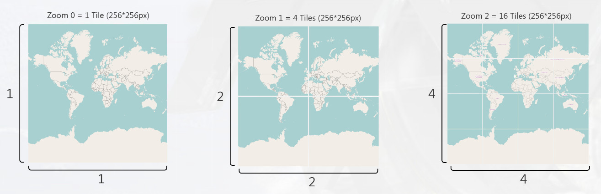
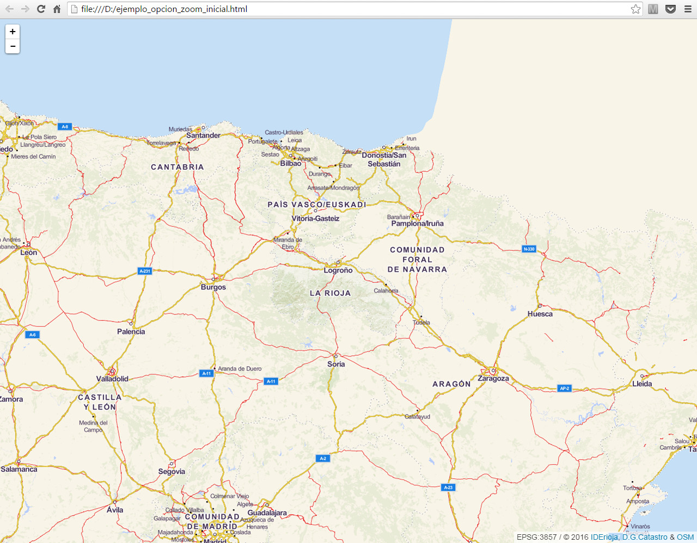

zoom_inicial
La opción zoom_inicial establece el nivel de aproximación visual que tendrá inicialmente el mapa. Esta opción puede tomar valores entre 0 y 19.
En el nivel 0 el mapa mostrará todo el mundo, correspondiendo el nivel 19 al máximo detalle. En caso de no definirse este parámetro, el valor por defecto es 10

De forma orientativa se indica la resolución espacial en metros pixel *(1) para cada nivel de zoom (en el ecuador).
| Zoom | Teselas | Número de teselas | Tamaño de la tesela en m (256x256 px) | Resolución m/px |
|---|---|---|---|---|
| 0 | 1x1 | 1 | 40.075.016,69 | 156.543,03 |
| 1 | 2x2 | 4 | 20.037.508,34 | 78.271,52 |
| 2 | 4x4 | 16 | 10.018.754,17 | 39.135,76 |
| 3 | 8x8 | 64 | 5.009.377,09 | 19.567,88 |
| 4 | 16x16 | 256 | 2.504.688,54 | 9.783,94 |
| 5 | 32x32 | 1.024 | 1.252.344,27 | 4.891,97 |
| 6 | 64x64 | 4.096 | 626.172,14 | 2.445,98 |
| 7 | 128x128 | 16.384 | 313.086,07 | 1.222,99 |
| 8 | 256x256 | 65.536 | 156.543,03 | 611,50 |
| 9 | 512x512 | 262144 | 78.271,52 | 305,75 |
| 10 | 1.024x1.024 | 1.048.576 | 39.135,76 | 152,87 |
| 11 | 2.048x2.048 | 4.194.304 | 19.567,88 | 76,437 |
| 12 | 4.096x4.096 | 16.777.216 | 9.783,94 | 38,219 |
| 13 | 8.192x8.192 | 67.108.864 | 4.891,97 | 19,109 |
| 14 | 16.384x16.384 | 268.435.456 | 2.445,99 | 9,5546 |
| 15 | 32.768x32.768 | 1.073.741.824 | 1.222,99 | 4,7773 |
| 16 | 65.536x65.536 | 4.294.967.296 | 611,50 | 2,3887 |
| 17 | 131.072x131.072 | 17.179.869.184 | 305,75 | 1,1943 |
| 18 | 262.144x262.144 | 68.719.476.736 | 152,87 | 0,5972 |
| 19 | 524.288x524.288 | 274.877.906.944 | 76,44 | 0,2986 |
Notas:
(1) Es necesario tener en cuenta, que por tratarse de una proyección Spherical Mercator (EPSG:3857), la resolución se irá modificando conforme la vista se aleje del ecuador, atendiendo la resolución de un pixel a la siguiente fórmula:
[Resolución de un pixel]=[Circunferencia de la Tierra]*cos(latitud)/2^(zoom+8)
Código de ejemplo
En el siguiente ejemplo se establece un valor inicial de zoom = 7.
<!DOCTYPE html>
<html>
<head lang="es">
<meta charset="UTF-8">
<meta name="viewport" content="width=device-width, initial-scale=1.0, maximum-scale=1.0, user-scalable=no" />
<title>Ejemplo de configuración zoom_inicial</title>
<style>
body, html{
height: 100%;
border: 0;
padding: 0;
margin: 0;
}
#map{
width: 100%;
height: 100%;
}
</style>
</head>
<body>
<div id="map"></div>
</body>
<script>
var iderioja_config = {
"zoom_inicial": 7
}
</script>
<script src="https://apigeo.larioja.org/v1/iderioja.js"></script>
</html>
Salida gráfica
Ejemplo de uso de la opción zoom_inicial=7. (visualizar ejemplo)
